This is not a history to read sitting down.
Grab your keys. We’re going for a walk—through your building, yes, but more importantly, through the stories attached to this bend in the river. At each stop you’ll stand where other people, in other centuries, have watched the same water slide past and tried to make a life out of this slippery ground.
Sometimes those people were Turrbal elders teaching children to weave rat-skin bags. Sometimes they were factory workers bolting steel in the humidity. Sometimes they were Greek grandmothers hanging washing in a yard that smelled faintly of leather and coal gas. Sometimes—in January 2011—they were your neighbours, in pyjamas at 3am, watching brown water bubble up through the basement floor.
The walk takes about thirty minutes if you dawdle. Bring this booklet, maybe a coffee, definitely your curiosity. Afterward, you’ll still live at 5 Duncan Street—but the place will feel older, stranger, and more alive.
We start at the front door.
Prefer to listen while you walk? This audiobook version follows the same route, pacing the stories to your footsteps. Press play, put your phone in your pocket, and let the river and the building do the rest.
Running time: 52 minutes. Best experienced with headphones while walking the route.
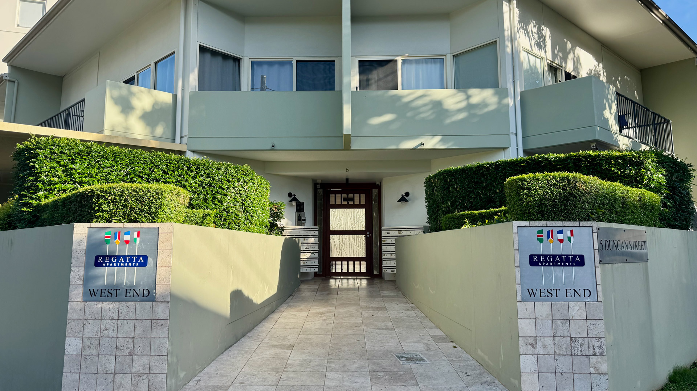
You approach along a gently rising stone path, flanked by stubby grey-green walls and square tiled pillars announcing Regatta Apartments – West End. The façade is white and sage, a quiet, sea-breeze palette that feels more coastal than inner-city. Above you, long verandahs and deep eaves give the building a low-key Queenslander feel translated into concrete.
The name—Regatta—sits there in clean letters, confident and contemporary, as if it were dreamed up in a branding workshop in the early 2000s.
It wasn’t.
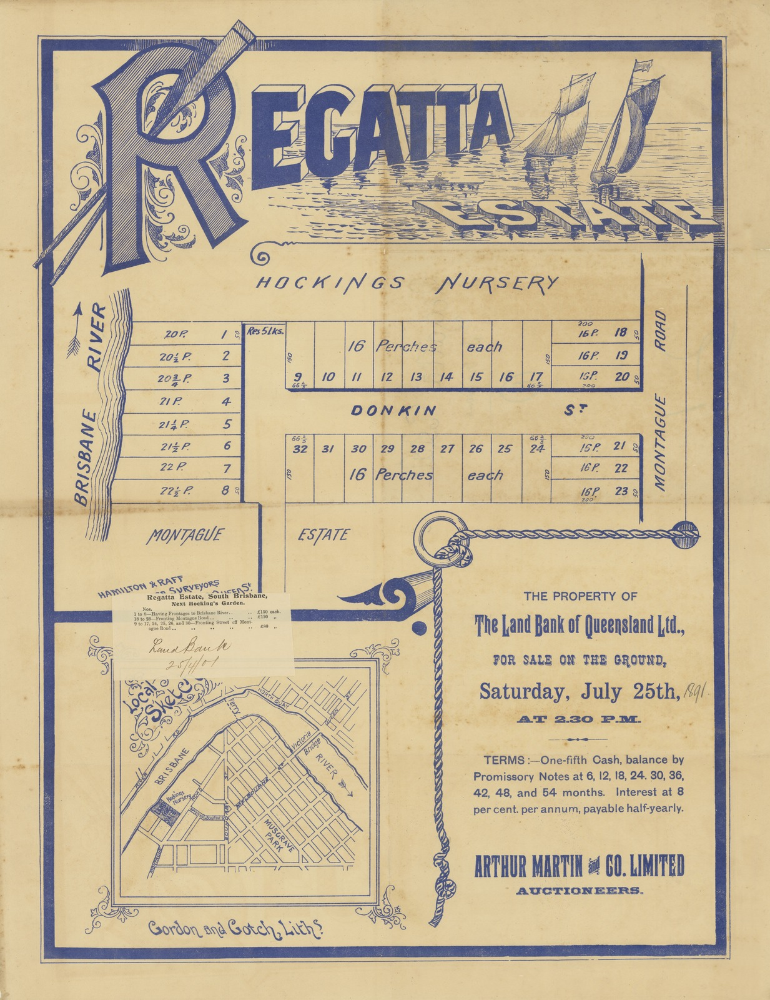
The name is 133 years older than the building.
In July 1891, a real estate firm called Arthur Martin & Co. advertised an auction in the Brisbane newspapers: “Regatta Estate, comprising riverfront allotments.” The land along this river frontage—this side of Duncan Street and its neighbours—had been surveyed by Hamilton & Raff for The Land Bank of Queensland Ltd. Lots 1 through 8, each with river frontage, were priced at £150. Serious money.
The estate was marketed to Brisbane’s rising middle class as a fashionable address: river views, fresh breezes, and safe distance from the rough, sweaty town centre upstream.
The auction on Saturday 25 July 1891 would have looked theatrical by today’s standards. Bidders arrived by horse-drawn tram. Men in high collars leaned over subdivision maps. Women walked the riverbank, parasols up, picturing lawns sloping down to the water.
Some lots sold. Some didn’t. A residential dream was sketched onto paper and pinned to this reach of Kurilpa.
Two years later, in February 1893, the Brisbane River rose twenty-eight feet in thirty-six hours.
The flood tore houses from their stumps, drowned livestock, and shattered the illusion that the river could be relied on to stay politely in its channel. The Regatta Estate suddenly looked like a terrible idea. Respectable buyers walked away. Within a decade, the parcels were being snapped up cheaply—not for homes, but for tanneries, boot factories, machinery sheds.
The middle-class dream here collapsed into industrial reality. The name “Regatta” slid quietly off the sales maps and into the archive.
When Stockwell chose the name “Regatta Apartments” in the early 2000s, it wasn’t a fresh invention. The word had already been tied to this bend in the river for more than a century—on the 1891 Regatta Estate sales maps and in the Regatta Hotel and rowing regattas across the water. Whether anyone in the marketing meeting had that old plan in front of them or not, the new building ended up reviving a name with 1890s roots.
Long before surveyors and salesmen arrived, this bend in the river already had a name: Kurilpa—“place of the water rat.”
Try a different picture. Strip away the pale stone path and tiled pillars. Replace them with a dense curtain of green. The entire riverside from what would become Victoria Bridge to Hill End was lined with tall figs and emergent hoop pines, vines and flowering creepers, staghorns and elkhorns clinging to trunks, scrub palms and giant ferns, rare orchids and wild passion flowers. The air was heavy and alive with whipbirds, scrub turkeys, insects, the drip of water.
Where the bike path runs now, there was a sandy beach. Water lilies crowded the shallows, and purple-flowering goat’s foot creeper trailed down towards the river.
For more than 60,000 years, Turrbal and Yuggera peoples lived with this river. This was not a remote hunting ground; it was a permanent campsite, a ceremonial place, a centre for teaching and passing on knowledge. The river provided mullet, bream, crabs, eels. The wetland inland from the bank—on the low ground that is now basements and car parks—held water birds, turtles, and yams.
The wedge-shaped peninsula that is now West End was ideal for hunting. Aboriginal groups could drive bush rats and fawn-footed melomys toward the narrowing tip, where they were trapped in nets in huge quantities. The melomys were eaten only by women and wove through Dreaming stories and tribal law. Reeds from the swamps were harvested for necklaces and for thatching.
In 1842, Moreton Bay was opened to free European settlement. By the late 1840s, mounted police were forcing Aboriginal people to withdraw beyond the town boundary after dark and on Sundays. That boundary line still has a name: Boundary Street, three blocks east of where you stand. The name is not poetic. It’s literal. A line on a map, enforced with violence: This far, no further.
As settler houses and farms pushed into Kurilpa, Aboriginal families adapted. Children carried water from the reedy swamps to the new houses, balancing buckets on their heads. They collected reeds for thatching, trading materials and labour for food and clothing. The swamps became a lifeline—until even that was constrained and drained.
The land west of the line—this side—was marked as fringe: the place for what didn’t fit, or wasn’t wanted, in town. That designation made room for dirty industry, then for Greek and Vietnamese migrants, and eventually for artists, activists, and anyone willing to live with noise, risk, and weirdness. West End’s reputation for being eclectic, scruffy, and proudly non-conformist has deep roots in a colonial decision about where to push people out.
You’re still standing at the entry path. The stone is warm under your feet. A neighbour walks past with a dog and nods hello. The river bends around the same point it has traced for tens of thousands of years. The water rats have largely gone. The Turrbal and Yuggera people were violently displaced. The 1891 estate failed. The apartment block succeeded. The river is the only constant in all of this.
Take a breath. We’re going in.
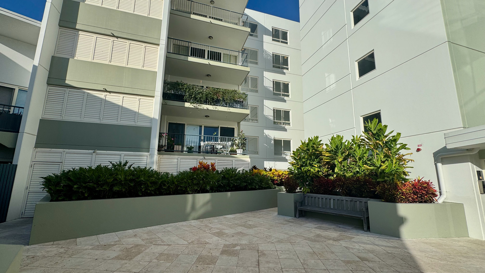
You step through the timber front door—unexpectedly warm, like an old Queenslander entrance absorbed into a modern block—and the building opens into the central courtyard. Pale stone tiles spread out beneath you, catching the light. Raised planters in rendered concrete hold dense clusters of bromeliads and glossy-leafed tropicals. Above, the building wraps around the courtyard in three sides; balconies stack five storeys high, some screened with white louvres, others open to the air, a few softened by trailing pot plants.
The space feels deliberately calm—white and sage walls, a weathered timber bench tucked against the greenery, the geometry of it all softened by shadows and leaves. On bright mornings the courtyard glows, pale tiles reflecting sky. It's the kind of space designed with just enough restraint that neighbours linger: a nod hello, a comment about the weather, the soft rhythm of footsteps you learn to recognise.
If you could float above this site in 1946 and look down at the aerial photo Brisbane City Council keeps in its archive, the scene would be almost unrecognisable—but some of the patterns around you would feel familiar.
The red outline that is now your courtyard and tower picks out a single substantial riverside house tucked into dense trees, almost like a little estate at the end of the street. To the east, though, the picture is already shifting: the big gas tanks and sheds of the South Brisbane Gas and Light Company dominate the view, and yard space and workshops are spreading along Duncan Street and Montague Road.
Somewhere along this stretch, the Australian Machinery Co. Pty Ltd was operating from a Duncan Street address. Old advertisements show what they were doing here. They made earthmoving gear: “TRAC-QUIP dozers, rippers and scoops to suit crawler tractors.” Semi-trailers. Timber jinkers. Heavy-duty hydraulic under-body hoists. The kind of equipment that would gouge roads through bush, carve housing estates into scrub, and later clear sites for buildings like yours.
Imagine the soundscape on a humid afternoon: grinding, welding, oxy cutting, the slam of steel on steel. Workers—many of them local, many Greek migrants who settled in West End after the war—walked to their shifts along dusty streets. Knock-off might mean a beer on Vulture Street, dinner in a small weatherboard house, gossip about union meetings or family arrivals from overseas.
The machines built along this reach of river were literally constructing post-war Queensland—and, in a twist no one working those shifts could have predicted, would later be used to knock down the very factories and yards that had crept in around that quiet riverside house, making room for courtyard pools and basement car parks.
Wind further back and the courtyard tiles blur into scrub and water. Early maps label the low-lying ground behind this riverfront as “Coombes Swamp”: a permanent waterhole fed by the river, teeming with frogs, birds and mosquitoes. In the 1946 aerial, that history lingers as the big, rough, open paddock just south of your block—a scar where wet ground has proved hard to tame.
When the Regatta Estate was surveyed in 1891, developers drained and filled parts of this swamp in an attempt to make the allotments look more respectable. After the 1893 flood, the water came back and sat there, patiently, on the cheapest lots.
When the grand houses didn’t eventuate, the wet, volatile land slid quietly into industrial use. If a factory yard flooded, you shovelled out the mud and went back to work. Respectable lounge rooms couldn’t do that.
Swamps, though, have long memories. You can fill them, pipe them, sheet them in concrete, but the water table remembers where it prefers to gather. In 1974 and again in January 2011, that memory rose through pipes and drains in ways the architects’ plans hadn’t fully respected.
The tiles under your shoes are dry again, warm to the touch. A monstera leaf curls towards the corridor. Someone’s sliding open a balcony door above you. It looks like an ordinary courtyard in a pleasant inner-city block.
But now you know this rectangle of light is balanced at the edge of a former swamp, on a mid-century machinery yard, a failed riverside estate, and tens of thousands of years of river knowledge. The layers aren’t stacked neatly beneath you in geological cross-section, but they do all converge here in time.
Walk toward the back. The herb garden is waiting.
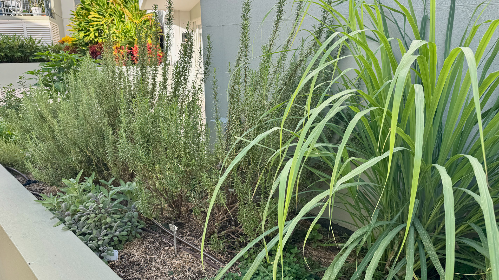
Near the back gate, a long raised planter overflows with basil, parsley, rosemary. Each time someone brushes past, a small cloud of scent lifts into the air. Thin black irrigation tubes run through the soil like veins, quietly keeping everything alive through February heat. It’s a modest patch—a strip of green in a hard courtyard—but it changes the feel of the whole place. It makes 5 Duncan Street feel lived-in, not just inhabited.
A few hundred metres east of you—between Montague Road and the river, near what is now Ferry Road—stood one of Queensland’s largest tanneries.
Thomas Coar Dixon arrived in Brisbane in 1869 and, in 1873, set up his tannery at “Hill End” (the old name for West End). At that time he described the area as “a beautiful place with hills covered in bush and with only seven houses nearby.” By 1875 he had purchased five acres of riverfront land for £300. Perfect: direct access to water for the tanning process, and downwind from the polite suburbs.
Tanning is one of humanity’s oldest and most notoriously foul trades. Raw hides—cow, kangaroo, possum— were soaked in vats of lime, then in tannic acid baths, then oiled and worked. The smell sat somewhere between rotting meat and harsh chemicals. It crawled into hair, clothes, skin. You could smell Dixon’s place from streets away.
Fire destroyed all five of his buildings in 1885. He rebuilt. The Black February flood of 1893 drowned the riverside sheds. He rebuilt again. By 1908 he had commissioned architect Richard Gailey to design a substantial two-storey brick boot factory on Montague Road. When it opened, it was hailed as the largest men’s shoe manufacturer in Australia.
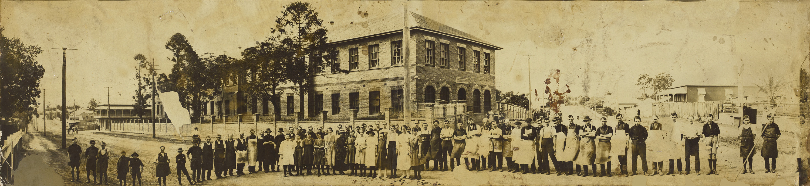
The tannery operated for ninety-seven years, closing in 1970. The boot factory lasted until 1973.
For almost a century, the air around here carried the smell of hides, lime, and coal gas. The river was a convenient drain. Yet people lived and raised families in the streets behind the works because the land was cheap, close to jobs, and outside the line. Fringe land, again, doing essential but unglamorous work.
Against that backdrop, your little strip of basil and rosemary does more than garnish pasta. It quietly insists that this ground can smell clean and feed people again.
You run your fingers through the rosemary. The sharp, resinous scent clings to your skin. Behind you, the black metal gate leads to a narrow lane, and beyond that the river—the same river that Dixon used for his hides, the same water that flooded his sheds and later pushed up through modern stormwater drains to float cars in your basement.
We’ll follow the water next. Let’s walk to the pool.
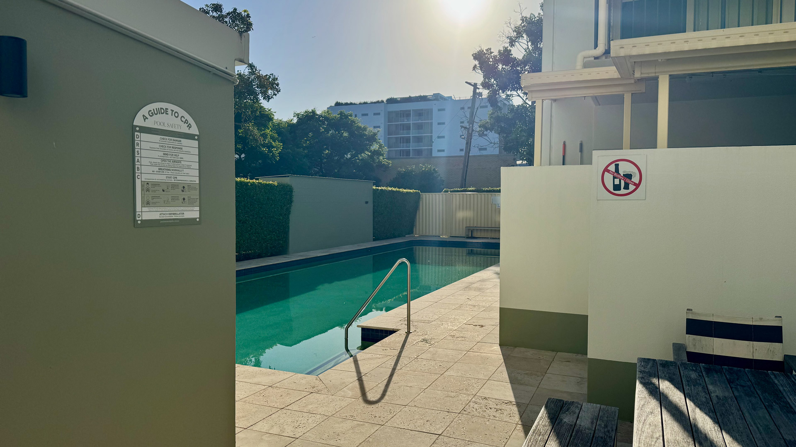
The pool runs along one side of the building like a turquoise stroke, held between white walls and glass fencing. It’s long and narrow—almost a lane pool—with pale tiles edging the water and a simple metal handrail. Inside the fence, a weathered timber table has gone silver under years of sunblock, wet towels, and evening drinks. On hot afternoons, a striped umbrella blooms above it, and the courtyard briefly pretends to be a tiny beach club.
On the morning of Wednesday 12 January 2011, the pool was fine.
By that evening, nobody was thinking about the pool.
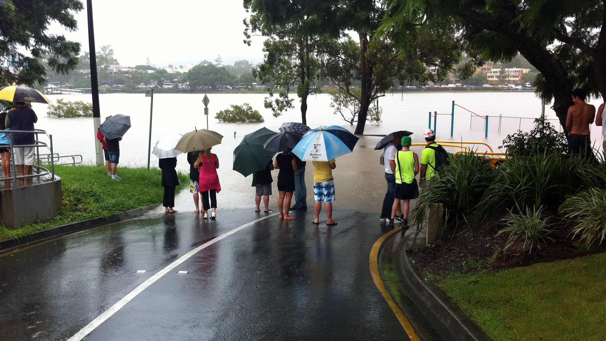
Building managers Sean Culhane and Robyn Keen, and residents throughout Regatta Apartments, had been watching the river for days. Wivenhoe Dam was releasing huge volumes of water. News footage showed whole suburbs going under. Roads were cut. At 2:20am on the 12th, the manager at neighbouring Arriva Apartments saw water “bubbling up through one of the stormwater grates.”
The flood here did not arrive as a wall of river water spilling over the bank. It came from beneath.
The old Coombes Swamp—filled, paved, built over—reasserted itself. Water rose through stormwater drains, basement vents, gaps in the ground. The low bowl of land behind Riverside Drive began to fill. As Paul Rees, the Body Corporate chair, later noted, the worst flooding was not at the river’s immediate edge, but “halfway back to Montague Road.” The water followed the shape of the land, not the line on the map.
By mid-morning on the 13th, the basement car park at 5 Duncan Street was inundated. Cars floated. Electrical systems failed. Lifts stopped dead. Police knocked on doors at dawn, ordering evacuations. Residents in pyjamas carried pets, passports and laptops up the stairs, watching brown water creep up the concrete ramps below.
The response quickly turned communal. Many residents worked almost without sleep. Neighbours filled sandbags, moved cars, checked on each other, shared information and food. No apartments flooded. No one was injured. It was close, and the building’s mechanical systems took a hammering, but people held the line together.
If 2011 felt like a catastrophe, the 1893 flood was something worse.
In February of that year, just two years after the Regatta Estate auction, heavy rain and upstream catchment failures sent the river into a rage. A photograph from nearby Orleigh Street shows a house lifted clean off its foundations and dumped at wild angles. The South Brisbane Gas and Light Company’s works up Montague Road flooded to the second floor of its central tower. Thomas Dixon’s newly rebuilt tannery was wrecked again.
That flood killed the first Regatta dream stone dead. The sales pitch of “fashionable riverfront living” couldn’t survive the sight of rowing boats gliding where parlours were meant to be.
The pool lies quiet again. A few leaves drift on the surface. The sky above is clean and blue. To a stranger, it’s just another apartment-block pool: a nice tick on a real estate listing.
To you, it’s now clearly parked on top of a low bowl the river has filled more than once. The machinery yards and sheds that used to occupy this risky ground could be hosed out after a flood. A six-storey modern apartment complex, with its basement full of cars and its electrical heart underground, is a different kind of bet.
The land has allowed this experiment so far. There is no promise it will always be gentle.
Let’s walk inside again. The lobby explains the name above the door.
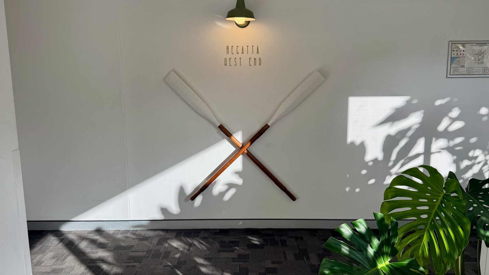
You step through the glass doors into a lobby that’s surprisingly calm. Grey stone-look tiles underfoot, pale green mid-century armchairs in the corner. Light filters in from the courtyard and pool, so even on a week of rain the space feels bright rather than gloomy.
Down the corridor, two crossed oars hang on the wall, their white blades catching the light from a single green lamp. Small letters spell out “REGATTA WEST END.” A monstera pot plant beneath them pushes its glossy leaves into the hallway like it’s trying to join the conversation.
The oars aren’t generic décor. They are pointing, quietly, across the river.
On the Toowong side stands the Regatta Hotel, a heritage-listed pub built in 1886–87 and still one of Brisbane’s most recognisable riverfront buildings. It was named for the rowing regattas that took place along this reach of the river. Crews from Brisbane, Toowong and South Brisbane raced past this very bend. Spectators lined both banks, watching boats slide over the same muddy water you look at from your balcony.
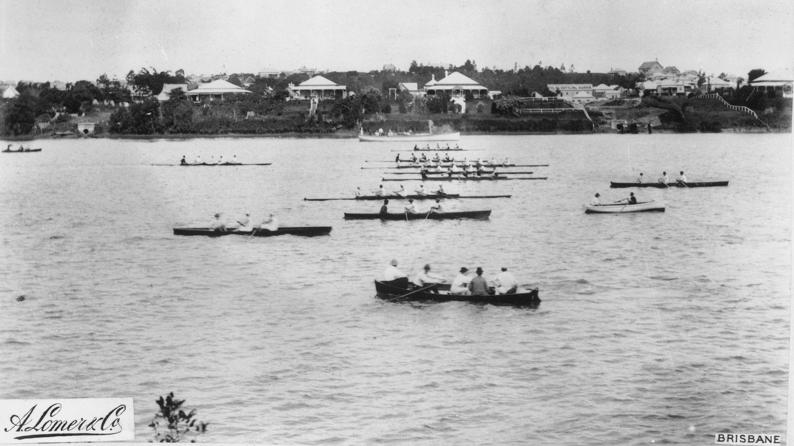
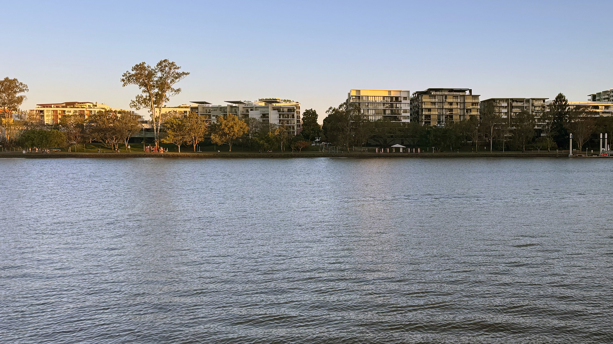
When the Regatta Estate was subdivided in 1891, the name almost certainly piggy-backed on that hotel and its regattas. It was an early attempt at lifestyle branding: attach images of leisure, sport, and respectability to what was, in reality, a flood-prone fringe.
It failed the first time. It worked for Stockwell in 2003.
Stockwell’s choice of the name “Regatta” sits neatly in that longer story. They were selling a lifestyle: river views, morning walks along Riverside Drive with your dog, coffee on the balcony watching CityCats glide past.
You stand in front of the oars again. They’re just painted timber mounted on plaster, lit by a single lamp. The monstera below them grows steadily, indifferent to branding exercises, inching outward year by year.
Time to ride the first lift of the tour.
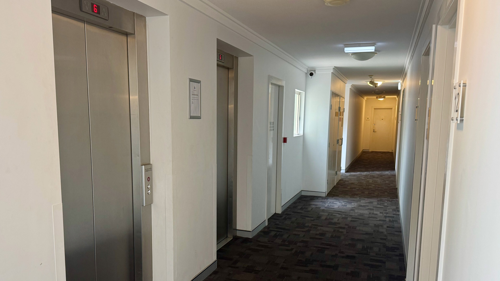
You press the button. The doors open with a soft sigh: a small stainless-steel capsule, quietly humming. Inside, the control panel is a neat vertical stack of round buttons, the surfaces polished by thousands of thumbs. A spec plate beside the door reads: “LIFT No. 1, 5 Duncan Street, West End QLD 4101. 13 persons. 1000 kg.”
The doors close. You rise.
This lift went in with the original construction in 2003. When Regatta Apartments was completed, it wasn’t just another project—it was one of the first substantial residential developments planted in this old industrial precinct along the river at West End.
For over a century, councils and developers had considered this stretch of riverside unsuitable for housing: too flood-prone, too industrial, too marginal. The success of 5 Duncan Street showed that, with enough concrete, engineering and optimism, the calculation could be flipped.
Stockwell didn’t stop here. After this block sold and settled successfully, they went on to develop 14 more residential buildings in West End, adding over 1,000 apartments. Other players followed. Pradella has now built more than 1,500 apartments in the suburb. McNab, Zen Group and others have added their own glass and concrete to the river’s edge. By 2024, Duncan Street is the site of multiple high-density projects, including 17-storey twin towers proposed at 24 Duncan Street.
Your lift carriage is part of the hinge point where “industrial fringe” turned into “riverside lifestyle precinct.” When you tap your fob and ride up to Level 5, you’re moving through a piece of infrastructure that helped reframe the value of this entire pocket of Kurilpa.
The lift stops. The doors slide open. Warm yellow lights pool along the corridor. Carpet soaks up the sound of your steps. Someone is cooking garlic in Unit 48; the smell drifts under a door and into the hallway.
Up again for the view.
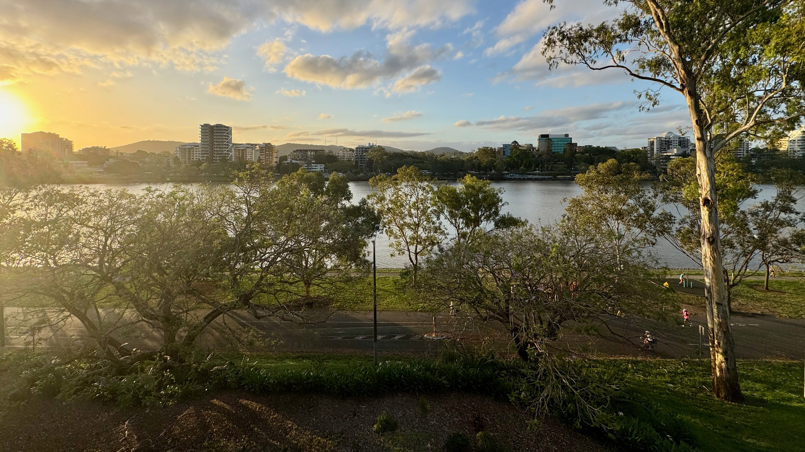
You step out onto an upper balcony—or, if you’re lucky, the rooftop. The view flings itself open. The Brisbane River fills the foreground, wide and brown and always moving. Across the water: a line of mid-rise apartments and office blocks, and behind them the faint blue smudge of the D’Aguilar Range.
Below you, the bike path along Riverside Drive goes glossy after rain. The grass throws up purple jacaranda confetti in October. Directly between you and the river stands the giant eucalypt—a true landmark tree. Its pale trunk rises from the parkland, and depending on the hour it’s full of raucous cockatoos, screeching rainbow lorikeets, or a single unimpressed kookaburra watching everything.
On summer evenings, there’s another kind of show. The western sky darkens; lightning forks across the ranges; thunder rolls closer. The wind abruptly flips from warm to cool, and within minutes heavy rain sweeps across the city like drawn curtains. From up here you can see the change coming—a grey wall shouldering its way along the river towards you.
From this height in 1946, you would look down on a patchwork of corrugated iron. The Australian Machinery Co. would be somewhere below. To the east, the South Brisbane Gas and Light Company’s metal stacks and coal heaps would dominate the view. Timber yards and sheds dotted the riverbank. Barges idled at simple wharves. Across the water, the Regatta Hotel was already sixty years old, its verandahs facing the river, slightly shabby and very familiar.
West End in the mid-20th century was a working-class suburb of weatherboard houses, corner pubs, and Greek-run fish-and-chip shops. Trams rattled along Hardgrave Road. Many kids swam in the river despite the pollution and parental warnings. Saturday nights were for the dance hall. The suburb’s rhythm was tied to factory whistles and shift changes.
Almost all of that world has been replaced now. The iron roofs are gone, the gasworks demolished, the tannery and boot factory converted or erased. The view from this balcony—glass towers, parkland, bike paths—is what lingers after a century of heavy work has been dismantled.
In 1820, if you could hover at this height, you wouldn’t be standing on concrete. You’d be suspended above a sea of canopy: figs, hoop pines, scrub, river forest. Smoke would curl up from campfires along the bank. Bark canoes would slip along the river. Children would be playing in the shallows, adults fishing, weaving, preparing food, conducting ceremony. Life would be ticking along on a timescale that made the idea of a three-storey brick factory or a six-storey apartment block almost unimaginable.
The wind tugs at your shirt. A CityCat slides past in the middle of the river, heading upstream toward the university. The cockatoos in the eucalypt startle into the air, screeching at each other. Across the water, someone hangs washing on a balcony.
The city carries on, mostly unaware that this view represents a brief intermission between two very different versions of river life.
We’ll rejoin the old beach next. Time to head down to Riverside Drive.
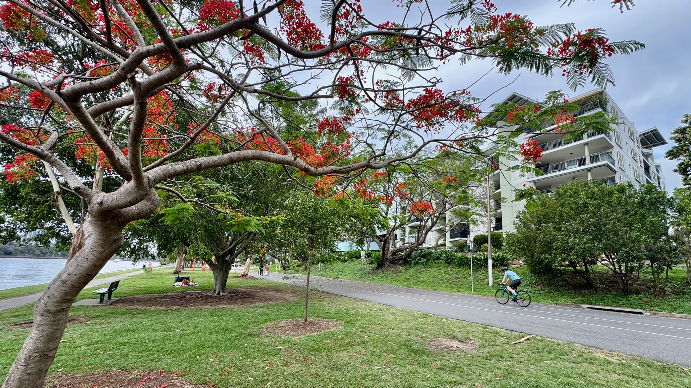
You've left the building and are standing on the Riverside Drive bikeway. Beyond the trees stands the pale façade of Regatta Apartments; to your left, the river. Just ahead rises that towering eucalypt you saw from the rooftop, its branches alive with lorikeets. Other trees lean in over the path—jacarandas with their purple haze, poincianas blazing red and orange—dropping flowers in irregular, lazy flurries.
The path is rarely empty. Cyclists glide past with a ding of the bell. Joggers flick past in bright shoes. Dogs tow their humans along at different speeds. Neighbours from 5 Duncan Street loop past at recognisable times of day, part of the building's daily choreography.
The path was extended and polished by Brisbane City Council during the riverside redevelopment of the early 2000s. Before that, Riverside Drive ran here as a shabby through-road where cars parked bumper-to-bumper along the riverbank. That smooth strip of asphalt—with lawn and trees instead of parked cars between you and the water—is one of the big reasons your building and its neighbours are so sought-after: you're a short stroll from riverbank parkland and plugged straight into a network of walking and riding routes.
Riverside Drive—the road you cross to get from your building to this path—wasn’t laid out in one hit. Work on a riverside road and park began back in 1949, extending from the William Jolly Bridge toward Davies Park, and continued in stages through the 1970s and 1980s.
To create it, council pushed in huge amounts of rock and fill to regularise and raise the shoreline, eventually dumping tens of thousands of cubic metres of spoil from the King George Square carpark excavation along this edge to stabilise the bank between Davies Park and Orleigh. The result was a continuous ribbon of road and parkland that separated factories from the water and, later, made riverside apartments like Regatta much more thinkable.
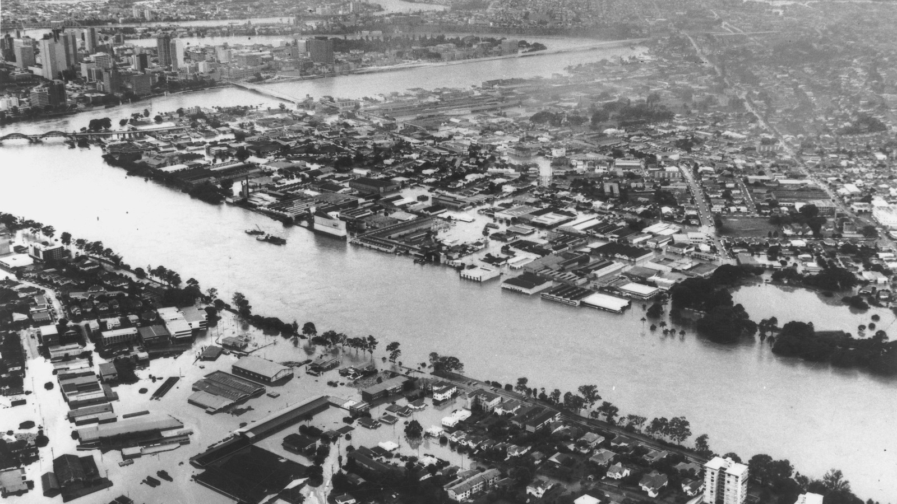
But hydraulic compromises always have limits. The road reduced certain flood paths. It did not erase the old swamp bowls inland. In 2011, water came not over this path but up behind it.
The neat ribbon under your feet had no equivalent in 1893. This line would have been somewhere under swirling, debris-filled water. Boats moved through streets. People perched on roofs. Livestock, houses, sheds and bridges were simply carried away.
After the 1974 flood, Wivenhoe Dam was built to prevent such extremes. In 2011, a combination of extreme rainfall and what the Queensland Floods Commission later called ‘sub-optimal decisions’ about Wivenhoe Dam releases saw the river rise to levels not far off 1893. The river’s memory, it turns out, is longer than any engineering plan.
Long before roads and bike paths, this was simply part of Kurilpa on Turrbal and Yuggera Country. Along this north-facing bend, early accounts describe a sandy beach, with waterlilies thick in the shallows and creepers dangling down to the river’s edge. Bark canoes were launched and beached along this stretch. Families crossed here. Children swam here.
Stand for a moment and try to strip away the bike commuters and Lycra. Picture a bright sandbank, clean water, the echo of voices across the river, the slip of a canoe pushed into the current.
A cyclist rings their bell, and you step aside without thinking. A neighbour walks past with their cocker spaniel and gives you a wave. Petals—purple, red, orange—stick, briefly, to the soles of your shoes.
We’ll walk east now, towards a rusted relic that stubbornly refused to disappear when the factories did.
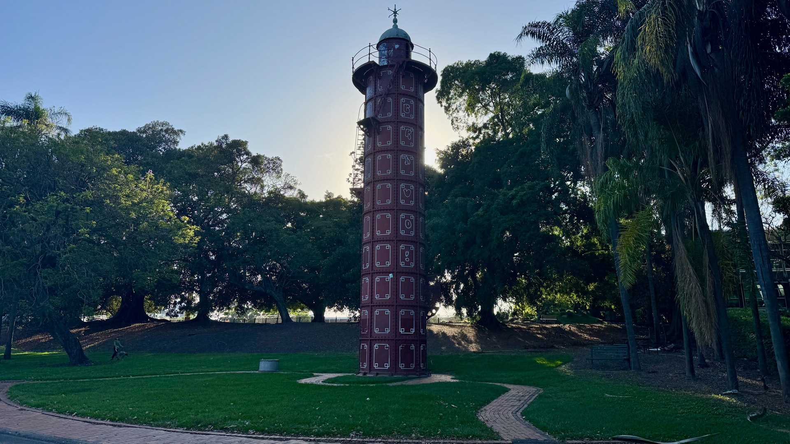
About 300 metres east along the bike path, near Davies Park, a tall, rusted cylinder rises from the grass. It looks a little like industrial jewellery: slender, patterned in plates and rivets, about 21 metres high, quietly ignoring the playground and market tents around it.
This is the Gas Stripping Tower, the last surviving piece of the South Brisbane Gas and Light Company’s West End Gasworks.
The tower was built in 1912. Its sections were cast in England, shipped to Brisbane, and bolted together right here. Its job was to scrub coal gas—to remove ammonia and tar—before the gas was piped out to houses, businesses and streetlights across Brisbane.
The gasworks operated on this site from 1886 until 1975 and, for most of that period, it was one of the major industrial engines of the city. Hundreds of workers were employed across the complex. Massive circular gas storage tanks—like metallic moons—dominated the skyline. At night the site glowed, lit by its own product.
The smell was unforgettable. Coal gas comes with thick, black tar and choking ammonia fumes. Living nearby meant living with that in your nose and lungs.
When the gasworks closed in 1975, almost everything was dismantled. The big tanks came down. The sheds and chimneys disappeared. The ground was eventually sold and redeveloped. This tower alone was spared, moved about 200 metres to Davies Park and re-erected as a memorial. Today it’s heritage-listed as the only surviving gas stripping tower in Australia.
You stand at the base of the tower now. Rust snakes down the seams. A modest plaque explains the bare facts. Most people jog or ride past without reading it. For them it’s a bit of industrial weirdness, a prop in the park.
For you, it should now feel like a gravestone for the industrial century that defined this neighbourhood: gasworks, tanneries, factories, yards. All gone, their smells and noises replaced by coffee machines and traffic, with this single iron spine left to mark their passing.
Turn back toward Duncan Street. We’ll loop through Montague Road before returning home.
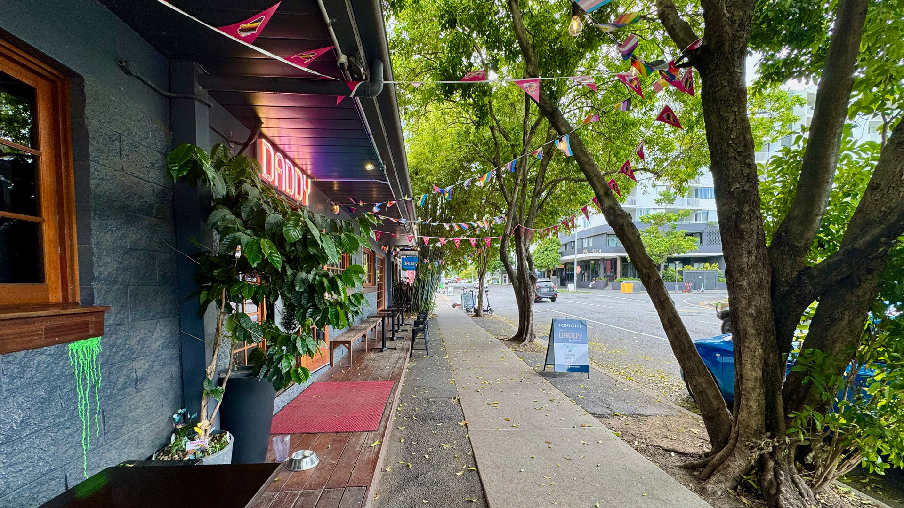
From Duncan Street you turn inland until you reach Montague Road, the main north-south spine running parallel to the river. The mood changes abruptly. The quiet riverside apartments give way to cafés, gyms, op shops, and art stores.
This is West End’s public face: busy, layered, multicultural. A Vietnamese bakery next to a craft brewery, next to a Salvos, next to a yoga studio. The footpath jostles with prams, students, tradies, retirees, and people who’ve lived here long enough to remember when you’d get funny looks for buying soy milk.
For more than a century, Montague Road was less about lattes and more about labour.
Thomas Dixon’s tannery and later his grand brick boot factory towered here, employing hundreds. The South Brisbane Gas and Light Company stretched across several blocks. Sawmills, concrete pipe works, iron foundries, a glassworks and other heavy industries crowded along this strip. In 1928 the Peters Ice Cream Factory opened nearby on Boundary Street: a modernist art deco block that pumped vanilla-scented steam into the air for seventy years.
A walk down Montague Road in 1950 would have sounded like factory whistles, grinding metal, steam hissing, trucks rattling over rough tar. It would have smelled of diesel, hot bitumen, baking bread from small bakeries, leather and chemicals from the tannery. You would have seen men in overalls, women in headscarves, kids ferrying messages and loaves home.
This was a place where home and work sat close together. People lived within walking distance of their jobs. Saturdays meant the Davies Park markets (running since 1918, and still going). Sundays meant church, soccer at Orleigh Park, extended family lunches.
By the 1980s, the big industries were fading. The gasworks had shut in 1975. Dixon’s factory was long gone. Peters Ice Cream moved out in 1996. The land, after decades of heavy use, sat unloved and often contaminated.
West End developed a reputation: cheap rents, rough edges, a haven for artists, musicians, activists, anyone comfortable living in a suburb that felt a little forgotten. Old warehouses became studios and performance spaces. The Nest at the corner of Duncan and Ferry Road is one of the last survivors of that phase, a working creative space lodged in an old industrial shell.
The 1988 World Expo at South Bank changed how Brisbane thought about its riverfront. Suddenly, land that had been considered too gritty or risky looked like opportunity. Zoning shifted from “industrial” to “mixed-use medium-density residential.” Developers moved quickly.
Stockwell bought the site at 5 Duncan Street in 2000. Construction began in 2001. By 2003, Regatta Apartments was open and occupied. The floodgates—of capital this time, not brown water—were well and truly open.
You stand outside a café on Montague Road. A bus sighs to a halt at the stop. People spill on and off. Someone wheels a crate of vegetables into a restaurant. Music drifts from a bar. None of this feels like a factory strip anymore.
But if you look closely, you can still see old bones under the new skin: roller doors that used to open for trucks now rebranded as café fronts; warehouses sliced up into retail spaces; a supermarket and underground carpark built where small farms once grew tomatoes and zucchini for the markets.
Turn back toward Duncan Street. We’ll finish where we began—only slightly rearranged in your head.
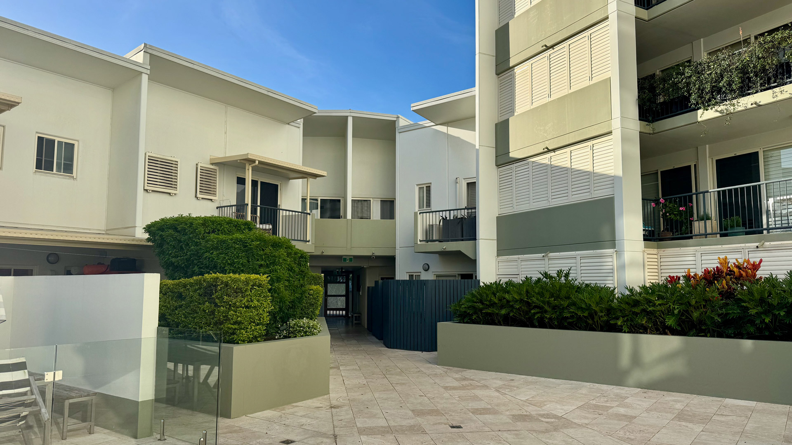
You're back in the courtyard. The sun has shifted; the shadows fall at a different angle. The tiles are properly warm now. Someone is doing steady laps in the pool. Another neighbour is reading on a balcony. A conversation drifts down from an open window—laughter, the clink of plates.
It looks like an ordinary day at 5 Duncan Street. Peaceful. Domestic. The kind of day that rarely makes it into history books.
But you're now carrying a mental map of what this place has been asked to be.
What makes 5 Duncan Street interesting isn’t just its design or its real estate listing. It’s the fact that this place is a palimpsest: a surface that has been written on, scraped back, and written on again, over and over, for at least 60,000 years.
Every time you walk through the front door, you’re passing through the entrance of a 21st-century apartment block that borrows its name from an 1891 subdivision that never quite worked. Every time you swim in the pool, you float above a patch of ground once used as a machinery yard on land shaped by draining and filling the old swamp behind it. Every time you look out at the river, you share a view line with Turrbal fishermen, factory workers on their smoko, Greek migrants walking home from night shift, and families watching the flood creep closer.
The land around you has carried many job descriptions: sacred country, wetland, scheme on a sales map, industrial engine room, art-squat and cheap share-house territory, now “lifestyle” real estate. The river has had only one: to flow, to rise and fall, to move sediment and memory.
The 2011 flood wasn’t a freak event from nowhere. It was the river and the ground quietly reminding everyone of their long agreement. Another reminder will come—climate change just makes the timing harder to predict. When it does, Regatta Apartments will be tested again.
But there’s another thread in this story that’s easy to miss when we talk only about water and concrete: people. Infrastructure fails. Social fabric can hold.
In his witness statement to the Queensland Floods Commission of Inquiry, Paul Rees—the Body Corporate chair—described 5 Duncan Street as having “a strong sense of community ethic, an active body corporate, and regular social events to strengthen our sense of community.” When the water came in 2011, that mattered. Sean and Robyn worked relentlessly. Residents checked on one another. Volunteers helped with clean-up. Strangers shared extension leads and food and rumours and reassurance.
The pumps and switchboards struggled. The neighbours did not.
That social infrastructure continues now in quieter ways. Rosie Russell, a resident since the building opened in 2003, is one of the people who quietly stitches the place together—organising gatherings, checking in on neighbours, making sure new faces feel that they’re living in a community rather than a vertical hotel. You can see this in the small daily choreography of the courtyard: someone holding a gate open, swapping laundry tips by the herb garden, pausing mid-dog-walk for an unplanned chat.
You’re part of that choreography now. You live on Kurilpa, on the industrial bones of the machinery yard, on the failed 1891 estate, in the resurrected 2003 version. You are a current sentence in a story that reaches backwards beyond written history and forwards well past the likely lifespan of this building.
The river will outlast every floor plan and body corporate rule. In the meantime, there’s a lot you can do with your small lease in this long narrative. Tend the herb garden. Swim in the pool. Walk your dog along the river path at dusk while flying foxes cut across a pink sky. Wave to the people you now know by sight in the courtyard. Watch summer storms roll in. Learn the history. Acknowledge the Traditional Owners. Pay attention to the land and the water.
Welcome home.
This historical narrative was researched and written with the assistance of several artificial intelligence tools, including language models such as Claude (Anthropic), ChatGPT (OpenAI), and Gemini (Google), as well as ElevenLabs for generating the audiobook narration. The composite hero image at the top of this page was created using Gemini's latest image generation model. These tools were used to gather historical information, synthesise research materials, and help draft and voice the text. All content has been checked against primary and secondary sources, and the overall structure, interpretation, and final editing decisions are the work of the human author.
AI-assisted writing can still contain errors or dubious interpretations. If you spot any inaccuracies or have additional information about our building's history, please let me know and I'll correct it. Anyone wanting to use this work for scholarly or commercial purposes should consult the cited sources directly.
I also acknowledge the Traditional Owners of the land on which Regatta Apartments stands—the Turrbal and Yuggera peoples—and pay my respects to Elders past, present and emerging. This land was never ceded. Its history is deeper and richer than any single document can capture.